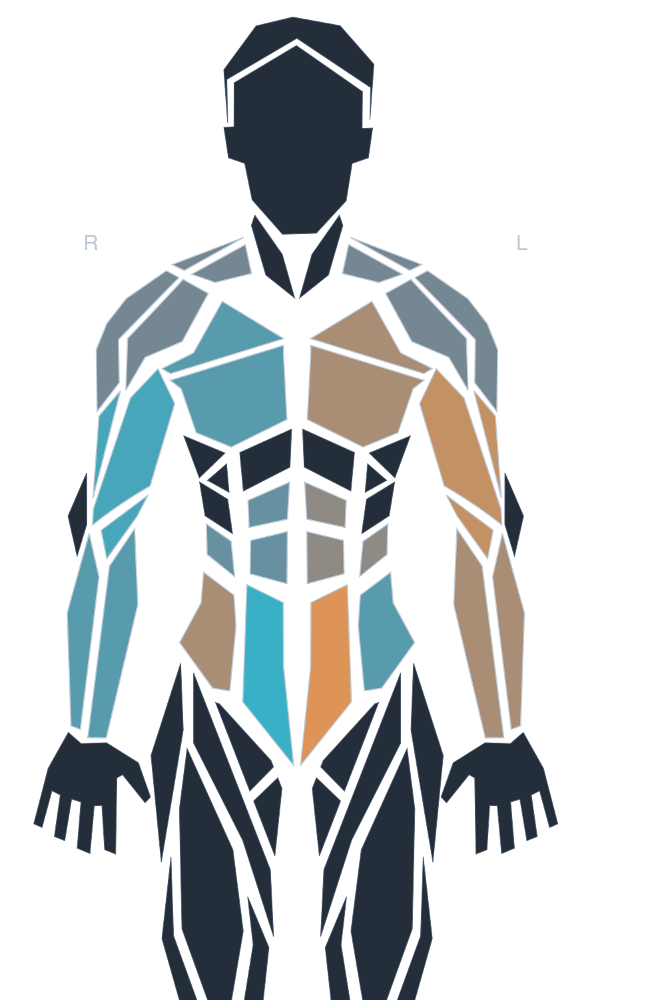
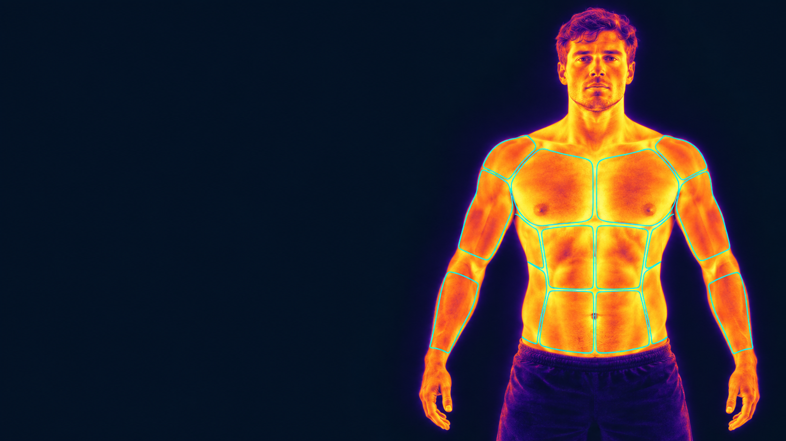
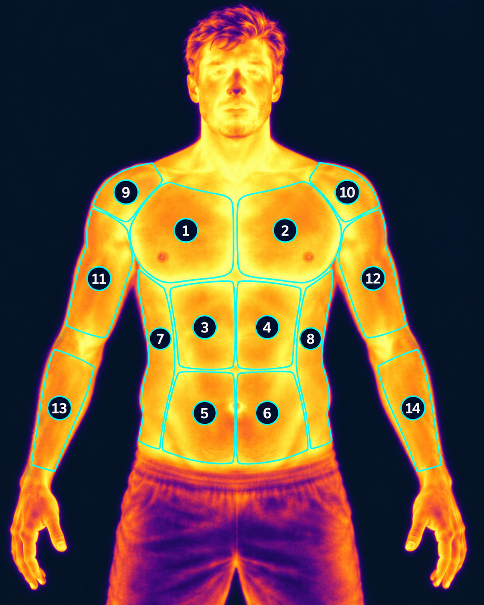
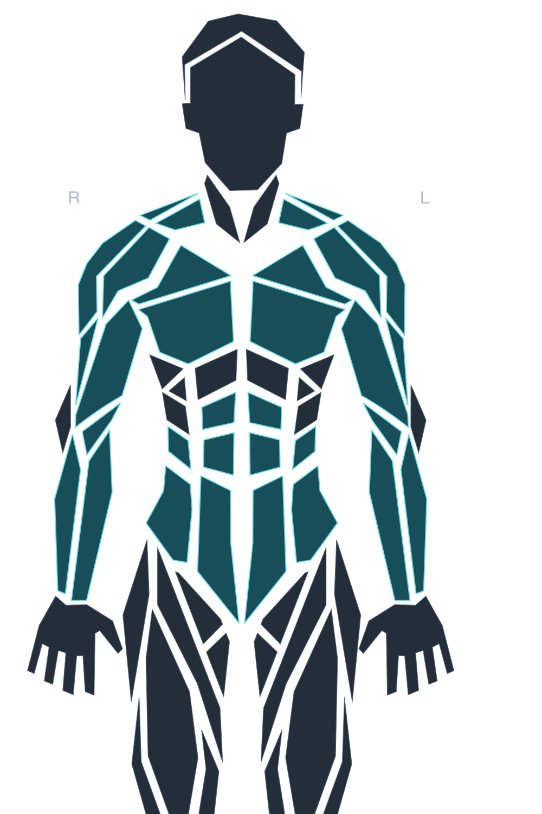

Deportistas y sesiones,
en orden.
Identificá a cada deportista y registrá evaluaciones con fecha, protocolo y notas. Las imágenes quedan vinculadas a su sesión.
Identificación · Sesiones · TermogramasPróximamente disponible para clubes
Nosotros llevamos la cámara térmica y todo lo necesario para la evaluación. Simetra reúne imágenes, comparaciones e informes para acompañar el trabajo de los profesionales de tu club.

Temperatura de cada región y diferencia entre ambos lados.
| Región | Izq. (°C) | Der. (°C) | Diferencia |
|---|---|---|---|
| Pectoral | 34,2° | 34,0° | +0,2 °C |
| Abdomen superior | 33,9° | 34,1° | −0,2 °C |
| Abdomen inferior | 33,6° | 33,2° | +0,4 °C |
La plataforma
De la imagen al informe, Simetra reúne la información para que tu equipo pueda revisarla y documentarla.
Identificá a cada deportista y registrá evaluaciones con fecha, protocolo y notas. Las imágenes quedan vinculadas a su sesión.
Identificación · Sesiones · TermogramasConsultá temperaturas por región, contrastá izquierda y derecha y revisá sus diferencias. También se muestran los límites de los datos disponibles.
Regiones · Temperaturas · AsimetríasDescargá un PDF para la revisión profesional, con las mediciones y la referencia del análisis. La evaluación conserva su trazabilidad.
Informe PDF · Fecha · ReferenciasLa información detrás de la imagen
Una cámara térmica permite observar la distribución de temperatura en la superficie de la piel.
Simetra ayuda a organizar esa información y visualizar asimetrías entre regiones de ambos lados del cuerpo. Su interpretación se realiza junto al contexto de la evaluación profesional.
Es una herramienta de apoyo. No diagnostica ni previene lesiones y no reemplaza el criterio profesional.

Cómo funciona

Nosotros proporcionamos la cámara térmica y coordinamos con tu club las condiciones para realizar la captura.

Reunimos las imágenes por sesión y región para consultar temperaturas y comparar ambos lados del cuerpo.
Tu equipo profesional recibe un informe en PDF para revisar los resultados junto al contexto de cada evaluación.
Imágenes de la presentación de Simetra: ilustraciones con IA y ejemplos con datos sintéticos. No permiten medir temperaturas. El avatar representa regiones de forma ilustrativa, sin homologación anatómica.
Una propuesta para tu club
Cámara térmica, plataforma e informes en una misma propuesta. Nosotros aportamos el equipo y coordinamos con tu club cada paso del servicio.
Coordiná una muestra para tu clubLa cámara térmica y los recursos para realizar la evaluación son parte de nuestra propuesta.
Mediciones disponibles, condiciones de captura y límites de interpretación.
Sesiones e informes que documentan cada evaluación termográfica.
Preguntas frecuentes
No. Nosotros proporcionamos la cámara térmica y todo lo necesario para realizar la evaluación. Simetra ofrece el servicio completo, con la plataforma y los informes para tu equipo profesional.
Sesiones con sus imágenes, temperaturas por región, comparaciones bilaterales disponibles e informes en PDF. El análisis también informa limitaciones de confiabilidad o regiones que no pudieron compararse.
No. Es una herramienta de apoyo para evaluación termográfica. La información debe ser interpretada por el profesional a cargo y no sustituye una evaluación médica o fisioterapéutica.
Simetra estará disponible próximamente. Ya podés contactarnos para coordinar una muestra, conocer cómo funciona y conversar sobre la propuesta para tu club.
Contacto
Conocé cómo funciona Simetra y qué puede aportar al trabajo de tu club. Contactanos para coordinar una muestra con tu equipo.
Próximamente disponible. Ya podés conocer nuestra propuesta.